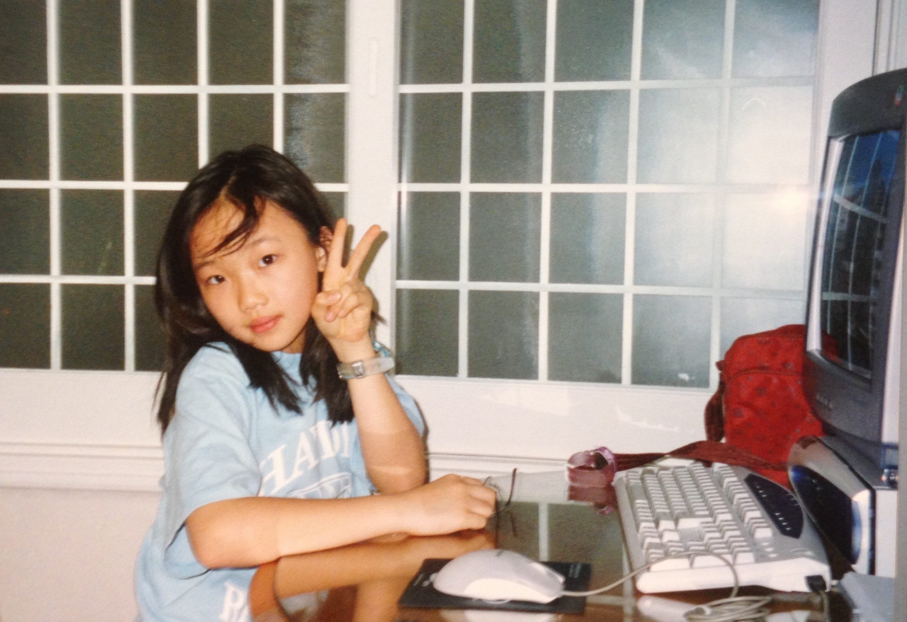

Julie Moon
is a writer currently living in Brooklyn. She was born in South Korea and is pursuing an MFA at Columbia.
Iowa Arts Fellow
Reviews on Environmental Health
SoundScene at the Smithsonian Hirshhorn Museum
Missouri Review's Miller Audio Prize in Poetry